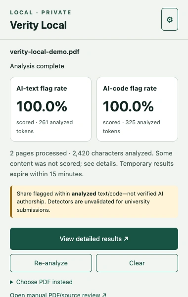

Know what was read.
See processed pages, extracted content, unread images, and exclusions. Missing coverage stays visible.
Review PDFs and source files with signals you can explore, evidence you can follow, and documents that stay on your machine.
✓ Chrome & Edge · Local Python backend · v0.4.0

01 / THE EXPERIENCE
Start with an overview.
Then follow the details that matter.
See processed pages, extracted content, unread images, and exclusions. Missing coverage stays visible.
Explore analyzed and flagged passages, then jump to their highlighted location in the original PDF or source file.
Text and code get separate summaries. Short or unsupported content is marked “Not scored,” with a reason.
Read the passage. Check the original. Make your own assessment.
Start a review, close the popup, and return to the same analysis.
Actual extension screenshots using the included synthetic demo document. Scores illustrate the interface, not accuracy.
A signal is a starting point. Flag rates describe analyzed content, not verified authorship. These detectors can produce false positives; the code detector is an experimental synthetic-style classifier.
How to read resultsLOCAL BY DESIGN
The extension talks to a Python backend on your own computer. Extraction and model inference happen there.
02 / DOWNLOADS
One project. A browser extension and a local backend working together.
Start with the project download, then follow the setup guide below.
The complete project: Python backend, ready-to-load extension, source, documentation, and examples.
Just the browser extension. Ideal for an update or a second browser when your backend is already set up.
The setup command downloads both automatically. Prefer a manual download?
03 / GET SET UP
A one-time setup for the extension, backend, and models.
After that, start the backend whenever you want to review.
Download the project ZIP, extract it, and open a terminal in the verity-local folder. The built extension is inside extension/.
Windows: run the backend steps in Ubuntu on WSL 2. Load the separate extension ZIP from a Windows folder.
Use Python 3.11 or newer. These commands create an isolated environment and download the pinned models.
Install Python 3.11+ if needed. In Terminal, inside the project folder:
python3 -m venv .venv
source .venv/bin/activate
python -m pip install --upgrade pip
python -m pip install -r requirements.txt
python -m backend.scripts.download_modelsOn Ubuntu/Debian, install python3-venv if needed. Check python3 --version is 3.11+.
sudo apt update
sudo apt install python3 python3-venv python3-pip
python3 -m venv .venv
source .venv/bin/activate
python -m pip install --upgrade pip
python -m pip install torch==2.13.0 --index-url https://download.pytorch.org/whl/cpu
python -m pip install -r requirements.txt
python -m backend.scripts.download_modelsFirst install WSL 2 + Ubuntu. Open Ubuntu, place the project in your Linux home folder, then run:
sudo apt update
sudo apt install python3 python3-venv python3-pip
python3 -m venv .venv
source .venv/bin/activate
python -m pip install --upgrade pip
python -m pip install torch==2.13.0 --index-url https://download.pytorch.org/whl/cpu
python -m pip install -r requirements.txt
python -m backend.scripts.download_modelsKeep Chrome/Edge on Windows. The backend uses WSL’s localhost forwarding; native Windows Python is not supported.
Already downloaded the model ZIPs? Use python -m backend.scripts.download_models --from-dir ~/Downloads instead.
Open chrome://extensions or edge://extensions. Enable Developer mode, click Load unpacked, and select the extracted extension/ folder. Copy the ID on the Verity Local card.
With Node.js 22.13+ installed, run these commands from the project root before loading the extension:
cd extension
npm ci --ignore-scripts
npm run build
cd ..With the virtual environment active, replace YOUR_EXTENSION_ID below with the ID you copied. Leave this terminal running.
python -B -m backend.scripts.run_local \
--extension-id YOUR_EXTENSION_IDWait for the models to load and application startup to complete. The address is http://127.0.0.1:8000. Stop the backend with Ctrl+C.
Click the gear in Verity Local. Keep the backend address as http://127.0.0.1:8000 and paste the contents of .local/backend-token into Local bearer token. Click Save and test connection.
pbcopy < .local/backend-tokencat .local/backend-tokenclip.exe < .local/backend-tokenOpen a PDF and click Verity Local. Or use Choose PDF instead to select a file. Open detailed results to explore the evidence.
Try the demo PDFTwo pages of synthetic prose and Python code. A simple way to explore the interface.
They show the share of analyzed content flagged by each detector at the selected threshold, separately for text and code. They are not the probability that a person used AI. The models can produce false positives, and neither is validated for university submissions. Read the model notes.
Analysis sends the document from the extension to your local, authenticated backend. Extraction and inference stay on that machine. Results are held in memory and expire; parser files are temporary. Downloading a remote PDF still contacts its hosting website. This site has no analytics scripts or upload form.
The extension is the review interface; the Python backend runs the models. You need both, plus the model files. Start the backend whenever you use the extension. The full project ZIP includes the backend and built extension; the model setup command obtains the weights.
Make sure the backend terminal is running and model startup has finished. Check the address is http://127.0.0.1:8000, the token matches .local/backend-token, and the launch command uses your actual extension ID. HTTP 401 usually means a token mismatch; 403 usually means the extension ID/origin does not match. Full troubleshooting.
Choose Choose PDF instead for a direct file upload. Protected, embedded, or login-based viewers may not expose PDF bytes. Local file URLs may need “Allow access to file URLs” in extension details. Manual uploads support up to 50 MiB and 500 pages; direct browser-tab capture supports up to 8 MiB.
Native text PDFs work with the default parser. Scanned regions need optional local Tesseract OCR and English language data. OCR code is displayed but withheld by default. Manual review accepts Python, JavaScript, and UTF-8 text files; unsupported or insufficient content is marked “Not scored.” Set up optional OCR.
Download the matching release, reload the unpacked extension from its extensions card, and restart the backend. Reuse verified model files with the same hashes. For daily use, activate .venv and run the backend launch command with your extension ID. Settings and the local token persist; analysis results do not persist across restarts.